Lectrix EV
This case study dives into my role as a product designer in reimagining the Lectrix app to deliver a smarter and more seamless EV scooter experience.
From uncovering user pain points like battery management and trip planning to crafting intuitive workflows and dynamic interfaces, I focused on creating solutions that are functional, delightful, and user-centered.
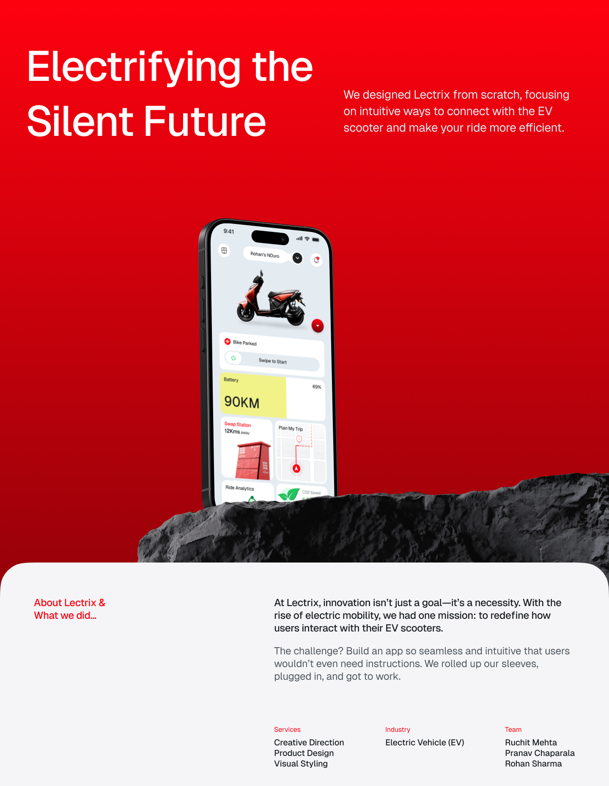
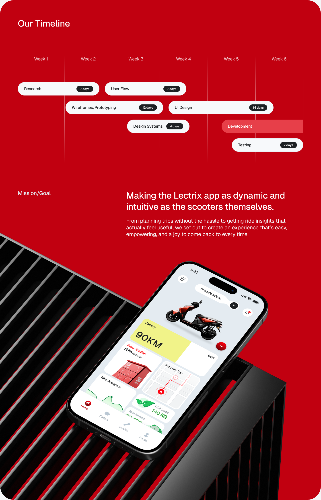
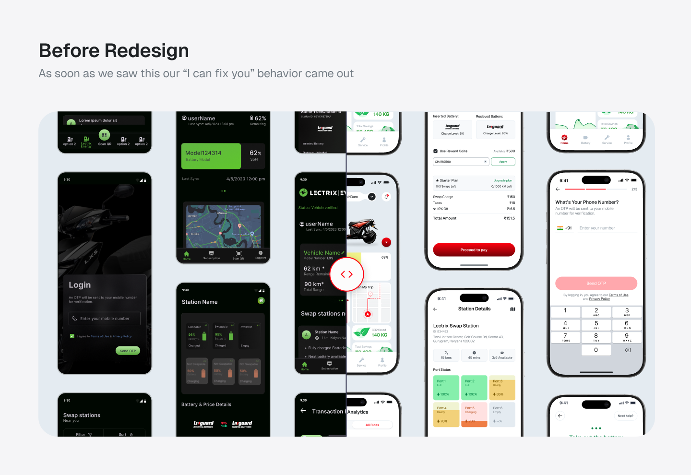
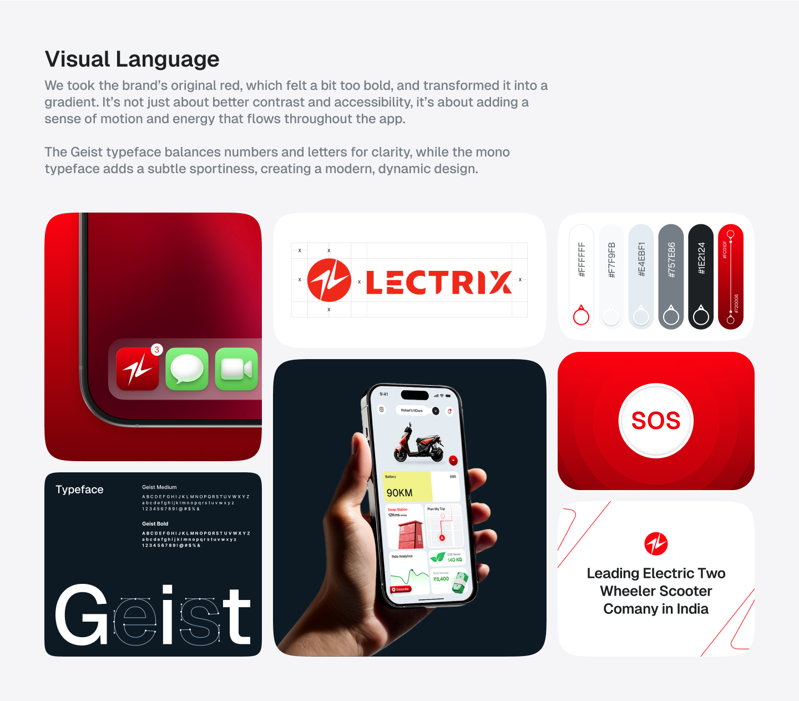
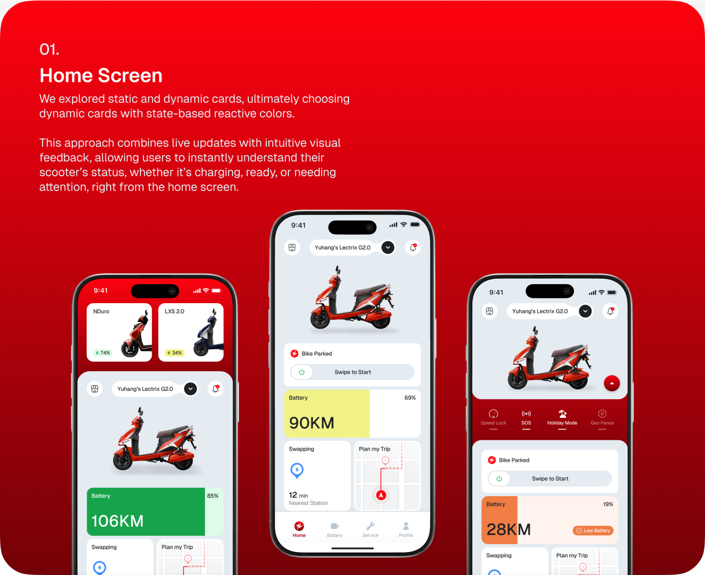
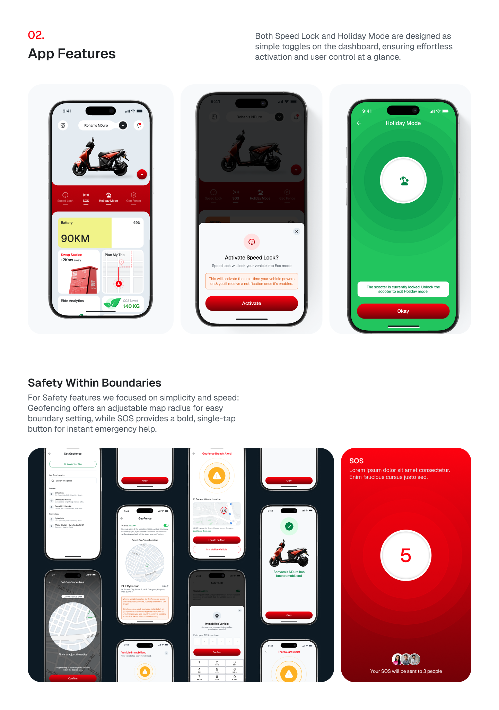
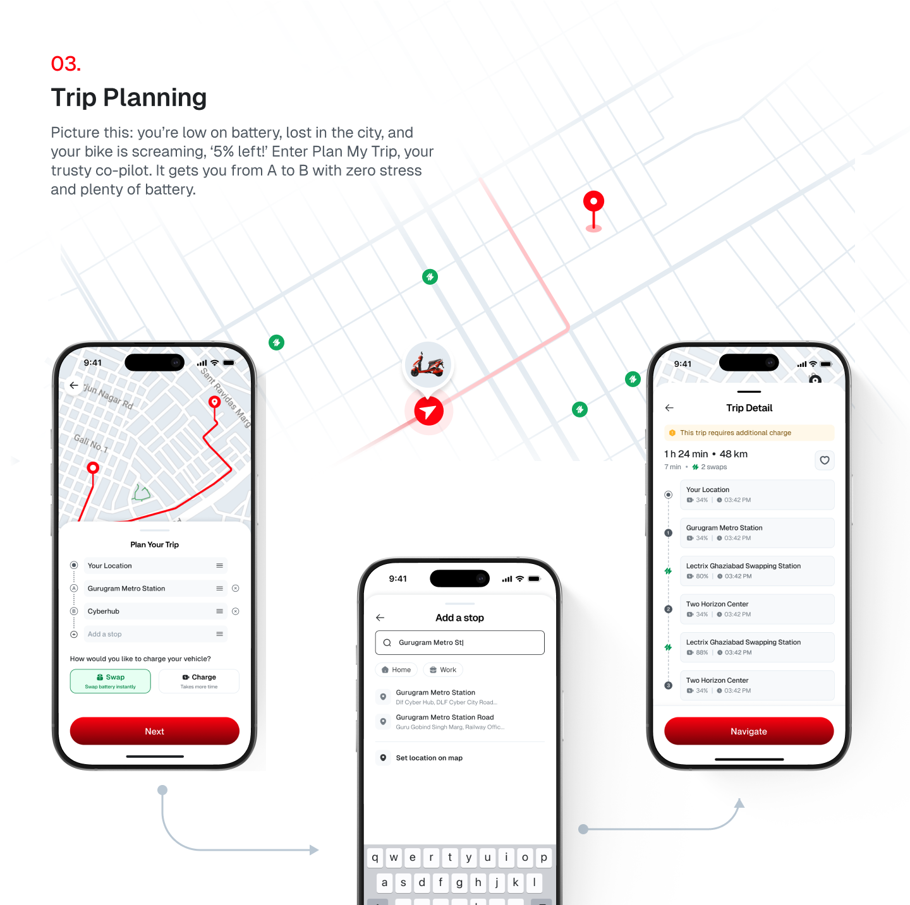
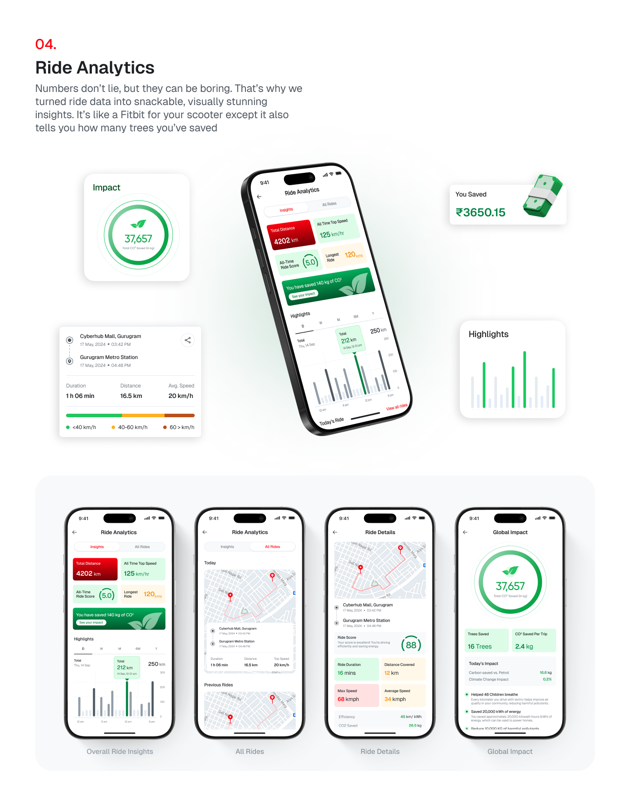
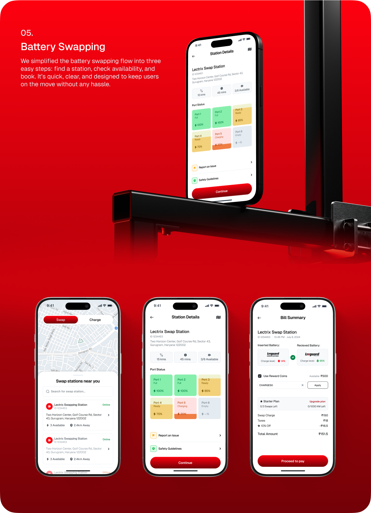
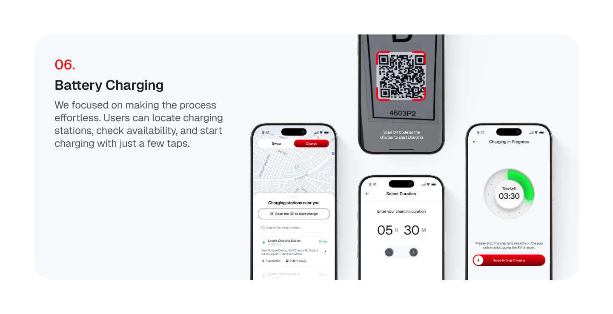
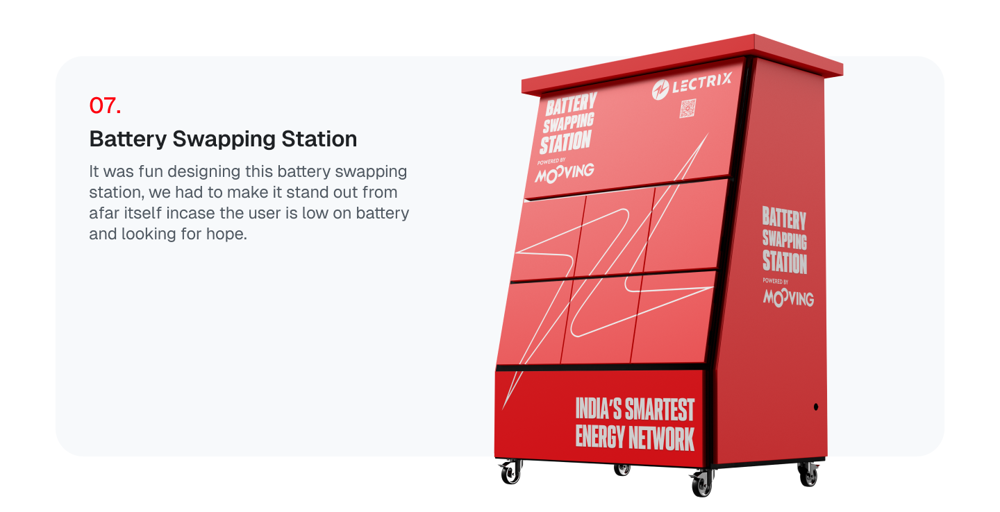
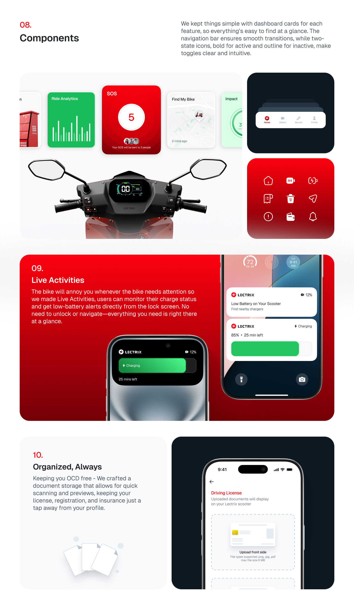
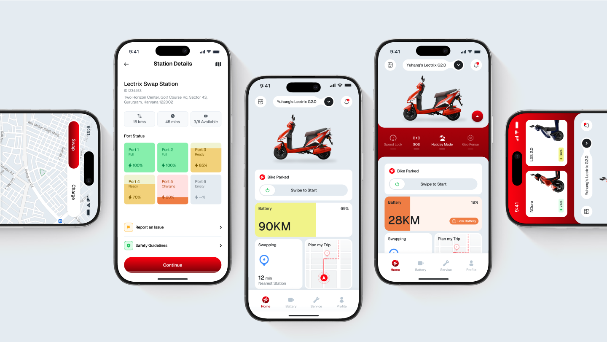